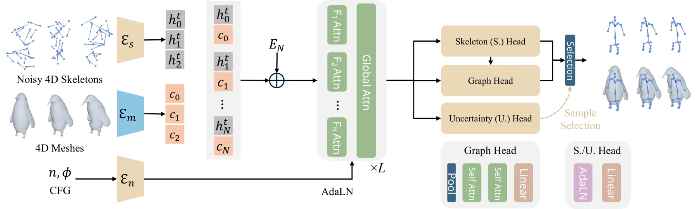
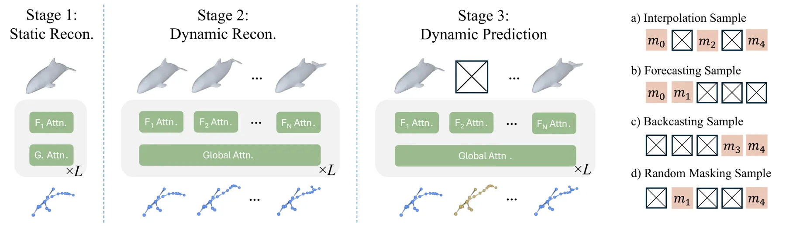
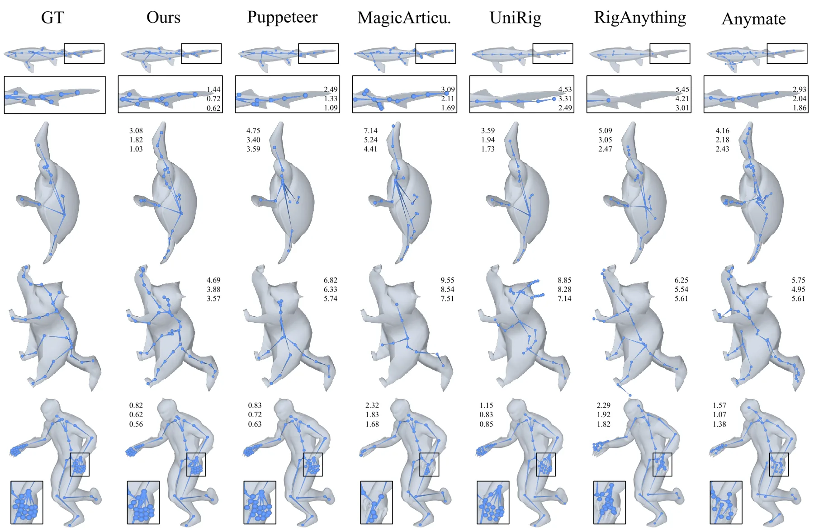
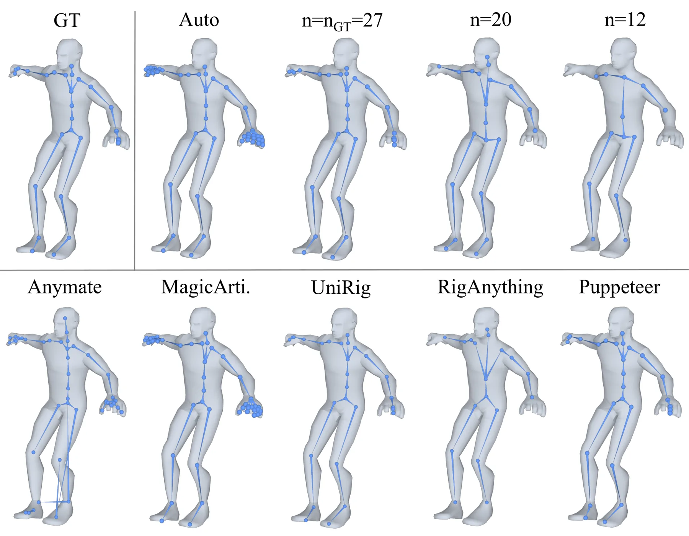
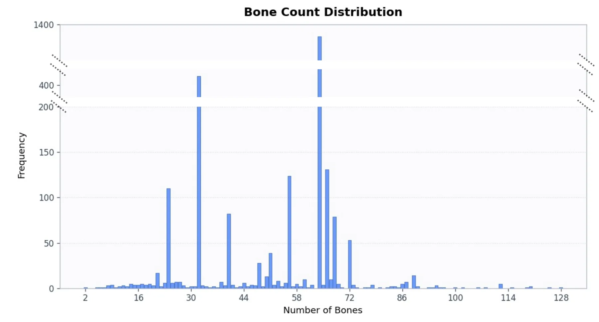

FlowRig：一次前向同时生成 3D 与 4D 网格骨架的流匹配模型
FlowRig: Unified Skeleton Generation for 3D and 4D Meshes via Flow Matching
用 128 个骨架槽位 + DiT 流匹配一次生成整段骨架：TexVerse 24 帧窗口 J2J 从 0.0163 降到 0.0142，骨数偏差、图结构距离与汉明距离全部为 0（基线为 3.18/0.265/14.19），单网格推理 1.1 s；代价是依赖上游时间对齐的网格序列。
J2J Chamfer
structural consistency
inference time
static rigging
作者、单位与技术谱系 · Research context
作者与单位
研究脉络
- Puppeteer（Song et al., NeurIPS 2025）方法基座关系：本文沿用其“固定槽位 + 集合预测”的骨架表示（Ls=128），但把逐帧生成改成序列级流匹配，并加上骨数条件控制。[论文 §3.3、§4.2 与 Table 2]
- Michelangelo（Zhao et al., NeurIPS 2023）组件来源关系：提供冻结的点云 VAE 编码器，把每帧网格变成条件 token；训练中不更新，因此模型容量集中在 DiT 主干。[论文 §3.3 与附录 B]
- DETR 式一对一监督（Carion et al., ECCV 2020）与最优传输流匹配训练机制来源关系：前者给出“固定槽位 + 匈牙利匹配”的监督方式以处理可变骨数，后者提供从噪声到骨架的直线路径与速度场目标。[论文 §3.2 与 §3.4]
合作网络
- 德州农工大学视觉 AI 组与项目页四位作者（Texas A&M University） → tamu-visual-ai.github.io/FlowRig 项目页关系：共同署名与官方项目主页[FlowRig 项目页]
- FlowRig 对 Michelangelo 编码器的依赖FlowRig → Michelangelo 点云 VAE关系：技术依赖（冻结条件编码器）[论文 §3.3 与附录 B]
- FlowRig 与 Puppeteer 的基线与设计承接FlowRig（Texas A&M） → Puppeteer（Song et al., NeurIPS 2025）关系：实验基线 + 槽位表示承接[论文 §3.3 与 Table 2]
作者与单位来自 arXiv HTML 首页，项目页链接来自同一页脚注；技术接续来自论文正文的引用与消融，属有来源的解读；论文未标注通讯作者与个人主页，因此不推断师生或实验室隶属关系。
方法本质拆解 · What actually changed
是不是微调？
是从头训练的新模型，不是微调：DiT-L 主干、图头与不确定性头都随机初始化，只有 Michelangelo 点云编码器被冻结复用。训练分三段课程（静态、4D 重建、掩码预测），学习率分别为 1e-4、5e-5、3e-5，全部用 AdamW 混合精度。
有没有额外约束？
约束集中在输出接口与损失上：128 个槽位的固定张量形状、序列级一次匈牙利匹配、图头的父节点分类（含根与非存在类），以及几何项（端点不得在网格外，用 SDF 罚）与平滑项（相邻帧骨长一致、三帧速度平滑）。输入还隐含要求网格序列时间对齐、每帧拓扑不变，方法本身不估计帧间对应。
推理/后端到底做了什么？
推理是一次条件 ODE 积分：从高斯噪声槽位出发，用 Euler 步沿预测速度场走到干净状态，再经图头取父节点、按存在位裁掉空槽位，得到骨骼端点与运动学树；骨数条件通过无分类器引导注入，可以指定 1 到 128 根骨。没有逐序列优化、没有后处理平滑、也没有跨帧对齐步骤，时间一致性来自槽位共享而非推理阶段。
方法本质是什么？
本质是把“骨架”从每帧独立的一组几何量，变成一组跨帧持久的身份槽位：流匹配负责在条件网格下把噪声搬到骨架分布，身份由序列级匹配固定，拓扑由图头在时间平均特征上一次性判定。它改变的是输出的参数化方式（身份 + 拓扑 + 几何）而不是几何先验；没有做的是从含噪或缺失观测中恢复网格，也没有联合求解蒙皮与形变。
输入单帧或整段网格点云 → 冻结编码器出条件 token，128 个持久槽位做流匹配 → 序列级一次匹配固定骨骼身份、图头定拓扑 → 一次前向输出时间一致的 3D/4D 骨架。

结论与问题Conclusion & Motivation
核心结论
FlowRig 把骨架生成写成“以网格为条件、在固定槽位上做流匹配”的序列预测问题，一次前向输出整段 4D 骨架，单个网格输入时同一个模型就是 3D 绑定器。静态侧在 Articulation-XL 2.0 上把关节到关节 Chamfer 从 Puppeteer 的 0.0311 降到 0.0264，在 Diverse-Pose 上 0.0252 与 0.0251 基本持平略优，ModelsResource 零样本 0.0358 仍略逊于在该数据集训练过的 RigAnything（0.0343）。动态侧的优势更直接：TexVerse 24 帧窗口 J2J-W 0.0142 对微调 Puppeteer 的 0.0163，而骨数偏差、图结构距离与汉明距离三项结构指标全部为 0，基线分别是 3.18、0.265 与 14.19。它没有解决的是输入质量：所有实验都建立在已时间对齐、已去噪的网格序列上，上游重建误差如何传播未被评测。
动机与问题
现代重建与生成管线已经能稳定产出时间一致的 4D 网格（如 ActionMesh、AniMimic），但几何本身不能直接用于动画、编辑、仿真与控制，还需要骨架。静态绑定方法从 Pinocchio 的模板拟合到 RigNet、UniRig、RigAnything、ARMO、Puppeteer 的自回归生成，质量提升明显，可是它们按帧独立套用时会出现拓扑闪烁与骨长抖动，而且自回归形式不便于显式控制骨数。4D 侧的方法（AKD、RigGS、AniMimic、RAT4D）多为逐序列优化，保真度高但每段序列都要重新优化，难以规模化；SPRig 这类一致性扩展仍不是统一的前馈框架。于是问题变成：能否用一个前馈模型，同时覆盖静态单网格与动态序列，既保持骨数可控，又让拓扑在时间上不跳变？
方法Method
方法总览
输入侧，每帧网格采样为带法线的点云，逐帧送进冻结的 Michelangelo 点云 VAE 得到条件 token；输出侧，初始化 128 个噪声骨架槽位，每个槽位是 7 维状态（存在位 + 两个 3D 端点）。DiT-L（24 层、1152 维、16 头）把槽位与网格 token 拼接，用帧索引做时间 RoPE，并采用“帧内注意力与全局注意力交替”的调度，输出与槽位同形状的速度场，Euler 积分回干净状态。训练用序列级匈牙利匹配建立槽位与真值骨骼的一一对应，损失是匹配后的流匹配 MSE 加不确定性 NLL、图头交叉熵与几何/平滑辅助项；推理时用骨数标签做无分类器引导（丢弃概率 0.5、引导尺度 5）。
关键技术细节
三个设计决定了“时间一致性”不是靠后处理得到的。第一，槽位是跨帧持久的，匈牙利匹配在整段序列上只算一次（锚定第 1 帧），因此同一根骨在所有帧里落在同一个槽位上，骨数自然不会漂移。第二，图头不是按距离连边，而是把时间维平均后的槽位几何与隐特征拼接，分类每个槽位的父节点（含根与非存在类），并对去噪步加权 (1−t)^γ，让小 t（骨架已成形）时的拓扑监督占主导。第三，不确定性头用带 stop-gradient 的高斯 NLL 只训练方差分支，不影响主干，推理时可采 5 个样本按置信度选一个。课程训练分三段：单帧静态绑定、变长窗口的全观测 4D 重建、以及对网格 token 做结构化掩码（前半、后半、仅两端）的 4D 预测，使同一个模型支持插值、外推与回推。

实验Experiments
实验设置
静态评测用 Articulation-XL（约 33,000 个带绑定的 3D 模型，覆盖人形、动物与机械）、ModelsResource（专业骨架的角色模型，考察拓扑准确性）与 Diverse-Pose；动态评测从 TexVerse 动画子集中用 Qwen3.5 预筛加人工复核，保留约 2,500 个“网格与骨架严格对齐”的物体中心序列，按 2,000/500 划分训练与测试。指标为关节到关节、关节到骨、骨到骨三种 Chamfer 距离（动态按时间平均，记作 -W），外加骨长偏差 BDD、图结构距离 GSD（基于父节点汉明距离）、骨数偏差 BND 与汉明距离 HD；窗口长度取 4、8、24。对照覆盖 Pinocchio、RigNet 两个经典方法与 MagicArticulate、Anymate、UniRig、RigAnything、Puppeteer 五个近年方法，其中 Puppeteer 在 TexVerse 上额外微调成 Puppeteer-D*。
实验数字与比较
静态（Table 1）：Articulation-XL 2.0 上 FlowRig 为 0.0264/0.0188/0.0163（J2J/J2B/B2B），Puppeteer 为 0.0311/0.0237/0.0198，UniRig 为 0.0331/0.0261/0.0218；用不确定性选样本的 Ours* 进一步到 0.0259/0.0184/0.0160。动态（Table 2，N=24）：FlowRig 为 0.0142/0.0112/0.0093、BND 0、BDD 0.0038、GSD 0、HD 0；Puppeteer-D* 为 0.0163/0.0132/0.0119、BND 3.1763、BDD 0.0150、GSD 0.2654、HD 14.1894；Ours* 为 0.0136/0.0107/0.0089，说明选样只带来小幅几何提升、不改变结构一致性。效率（附录 C.2）：单网格推理 1.1 s，比 Pinocchio 快 3.5 倍、RigNet 4.1 倍、UniRig 2.6 倍、MagicArticulate 2.2 倍、Puppeteer 1.4 倍；窗口拉长到表 S2 的最大设置时为 23.4 s。与逐序列优化方法相比，RigGS 处理 8 帧实例需 17 分钟（H200），在 193 个实例的子集上约 57 H200 小时，而 FlowRig 全流程约 2 GPU 小时。
消融/失败边界
Table 3 拆数据来源：只用动态数据训练时 J2J-W 为 0.0213、BDD 0.0049，加上静态预训练后降到 0.0142 与 0.0038，说明大尺度静态监督提供的是几何先验，缺它时 4D 精度与时间稳定性同时变差。Table 4 拆图头：换成 1 近邻连边后 GSD 从 0 升到 0.0375、HD 从 0 升到 2.2844，这是“拓扑闪烁”最直接的量化。不确定性选样只值 0.0006（N=24 的 J2J-W），属于锦上添花而非关键机制。失败边界主要有三条：输入必须是时间对齐、拓扑恒定的网格序列，真实重建里的遮挡、缺失帧与拓扑变化未测；TexVerse 子集被人工筛成物体中心的刚性运动，旋转、形变与软体不在覆盖范围；ModelsResource 的零样本结果说明跨数据集时它并不总是最优，静态绑定仍有明显的数据域依赖。
局限与迁移Limitations & Transfer
局限与待核验
作者明确列出三点未来工作：更需要“部分观测下的动态预测”基准、希望把蒙皮权重与形变一起预测、以及加入语义或文本级控制；这相当于承认当前只输出骨骼几何与拓扑，蒙皮由附录 F 的另一个前馈模型单独完成。我们待核验的是：论文没有报告对含噪网格（重建抖动、缺失面片）的鲁棒性，而这决定它能否接在真实 4D 重建后面；没有给出 4D 窗口的显存占用与训练总时长，只有推理时间；骨数条件控制的评测只以图 6 的定性展示为主，缺少“指定骨数 vs 实际骨数”的定量对齐误差；TexVerse 的筛选把 4D 数据缩到 2,500 段，泛化到人形角色、手部等多骨结构仍是未知。
与你研究路线的关系
它处理的是“结构在时间上不许跳变”的问题，和我们做多帧路标管理、动态物体跟踪、乃至因子图里变量增删是同一类约束，只是这里输出的是骨架槽位而不是路标。可迁移的第一点是序列级一次性匹配：用整段序列算一次对应、再让各帧共享槽位身份，比逐帧最近邻稳定得多，可以直接借到多帧特征跟踪与跨帧 ID 维持。第二点是图头 + 结构指标：把“父节点是否变化”作为可训练目标与评测指标（GSD/HD），比只看几何误差更能暴露拓扑漂移，我们评测动态场景地图时同样应报告“关联结构变化率”而不只是 ATE。第三点是不确定性头用于多假设选择，可对应我们对多组关联/位姿假设的排序。下一步最小实验：在一个含关节物体的室内序列上，用 slot + 图头的方式参数化可动物体（抽屉、门），看它能否给 SLAM 地图提供稳定的可动结构先验；同时用带噪网格做人造退化，测 J2J 与 GSD 随噪声的曲线。







